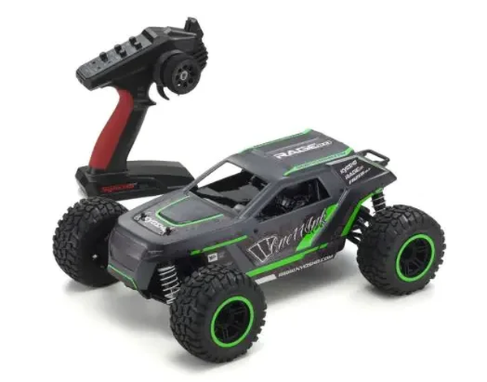

京商 Fazer Mk2 Rage 2.0

引用元画像：rcscrapyard.net
📋 基本情報
| メーカー | 京商（Kyosho） |
|---|---|
| 機種名 | Fazer Mk2 Rage 2.0 |
| シャーシ略称 | Fazer Mk2 Rage 2.0 |
| 型番 | 34411T1（レッド）、34411T2（グリーン） |
| 発売時期 | 2018年 |
| 価格 | ¥35,200（税込、2024年最新価格） |
| 生産状況 | 現行販売中 |
| カテゴリー | ラジコンカー（1/10スケール 電動トラック） |
| サブカテゴリー | 4WD 電動トラック（オフロード） |
| シリーズ | Fazer Mk2 ReadySetシリーズ |
📏 シャーシスペック
| 全長 | 390mm |
|---|---|
| 全幅 | 281mm |
| 全高 | 165mm |
| ホイールベース | 274mm |
| トレッド（F/R） | フロント235mm / リヤ235mm |
| タイヤ（F/R） | フロント・リヤ共 φ105×52mm |
| ギヤレシオ | 10.63:1 |
| 全備重量 | 約2,080g |
| シャーシ | モールドプラスチックシャーシ |
| ベアリング | フルボールベアリング標準装備 |
⚙️ 駆動系
| 駆動方式 | シャフトドライブ4WD |
|---|---|
| デフギヤ | ギヤデフ |
| スリッパークラッチ | 標準装備（ギヤ保護） |
| ドライブシャフト | ドッグボーンドライブシャフト |
| モーター | G14L標準装備 |
| ESC | 60A防水スピードコントローラー搭載済み（前進/ブレーキ/バック） |
| R/Cシステム | シンクロKT-231P+送信機標準装備 |
🔧 サスペンション
| 形式 | 4輪ダブルウィッシュボーン独立懸架 |
|---|---|
| ダンパー | コイルスプリングオーバーオイルダンパー×4本 |
📦 ReadySetキット内容
- R/Cユニット組み込み済み工場完成シャーシ
- カラーリング・デカール・組み立て済みボディ
- シンクロKT-231P+送信機
- 60A防水スピードコントローラー搭載済み（前進/ブレーキ/バック）
- 六角レンチ
- スパナ
別途必要なもの
- 送信機用単3乾電池×4本
- 走行用バッテリー
- 推奨：KYOSHO SPEED HOUSE 7.2V 22HV Ni-MHバッテリー（71322B）
- 推奨：KYOSHO SPEED HOUSE 7.2V 36HV Ni-MHバッテリー（71324B）
- 推奨：Gens ace LiPo 4000 ストレートパック（60C/7.4V、GAB4202）
- 走行バッテリー用充電器
- 推奨：KYOSHO SPEED HOUSE C-02B ACピークチャージャー（72002B、Ni-MH専用）
- 推奨：7.2V NiMH用 USBチャージャー（72204、Ni-MH専用）
- 各種工具
💡 特徴
Fazer Mk2シリーズの最新電動4WDトラック
- 2018年発売、京商の最新電動オフロードトラック
- 現行販売中で入手性良好
- ReadySet RTRモデルで開封後すぐに走行可能
- シャフトドライブ4WD方式で高い駆動効率
- フルボールベアリング標準装備で滑らかな動き
充実の標準装備
- シンクロKT-231P+送信機標準装備
- 60A防水ESC標準装備（前進/ブレーキ/バック）
- G14Lモーター標準装備
- スリッパークラッチ標準装備でギヤ保護
- 工場完成シャーシで組み立て不要
トラックボディの特徴
- Rage 2.0デザインの専用トラックボディ
- レッド（34411T1）とグリーン（34411T2）の2色展開
- 大径タイヤ（φ105mm）で高い走破性
- 長ストロークサスペンションでギャップ吸収
- ドッグボーンドライブシャフトで確実な動力伝達
- オフロード・公園走行に最適
2024年版の最新仕様
- パーツ情報も豊富で修理しやすい
- 情報量が多く、サポート体制良好
- NiMH・LiPoバッテリー対応
- 防水ESCで水場走行も可能
- 初心者からベテランまで楽しめる性能
🔧 ぽすとそに工房での修理実績
修理難易度
★★☆☆☆（普通）
パーツ情報も豊富で、情報量が多いため修理しやすいです。
よくある故障・注意点
- オイルダンパーのオイル漏れ（オフロード使用で劣化）
- ギヤデフの摩耗（砂や泥の侵入）
- スリッパークラッチの調整不足
- ドッグボーンドライブシャフトの摩耗（高負荷時）
- サスペンションアームの破損（激しい衝撃時）
修理のポイント
- オフロード走行後は必ず清掃（砂・泥の除去が重要）
- オイルダンパーのO-リングは定期交換推奨
- ギヤデフは走行後にグリスアップで寿命延長
- スリッパークラッチは適切な調整が必要
- 防水ESCだが、走行後は水分除去推奨
- パーツ入手しやすく、予防的メンテナンスも容易
- NiMH・LiPo両対応だが、過電圧に注意
その他の特徴
- 2018年発売、現行販売中で入手性良好
- パーツ情報豊富で修理しやすい
- 防水ESC標準装備で水場走行可能
- トラックボディで迫力ある走り
- 初心者からベテランまで楽しめる性能
- 京商の最新技術が投入されたモデル